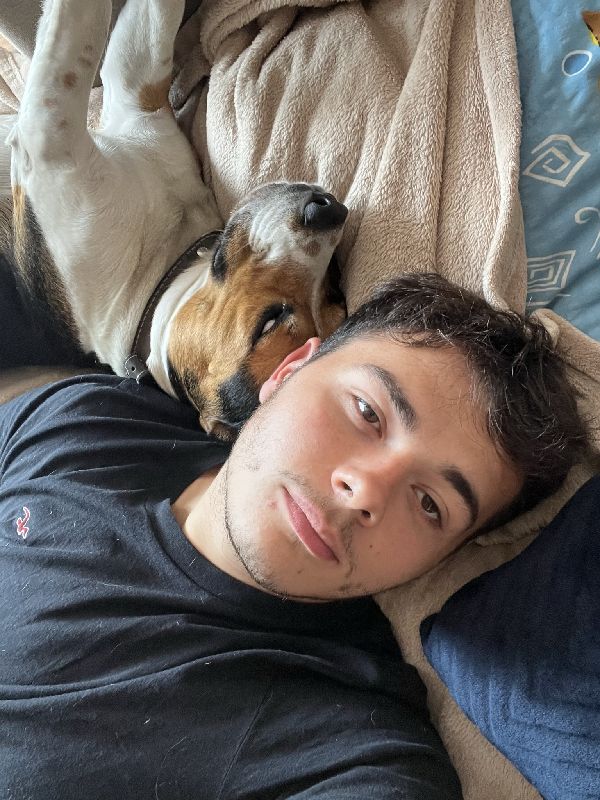

Kamil Błaut

Summary
I am 26 years old student at Silesian University of Technology in Poland.
Education
- Bachelors of Mechatronics - Silesian University of Technology (2019-2023)
- Masters degree in Automation and Robotics - Silesian University of Technology (2023 - Present)
Work Experience
My projects
Watering system in the garden
- Created layout of the watering system
- Selected components and created electrical diagram
- Assembled the system and powered it with ESP32
- Wrote control algorythm and integrated project with IoT (Blynk)
Program for helping students with kinematics
- Worked with 2 other people - I was responsible for application code
- Created GUI for the app
- Wrote code that calculated velocity and acceleration of given points based on manual calcualtions
- Added simulated preview of investigated mechanisms
Certifications
- Foundational C# with Microsoft - freeCodeCamp (December 2023)
- Begginer investor - "Gra na giełdzie" by Cezary Chybowski, Marta Kubacka (March 2024)
Skills
- Programming - mialny C#
- Web Development
- PLC Programming - TIA Portal, CoDeSyS
- CAD - Autodesk Inventor, Siemens NX
- Languages:
- English
- Polish
- Italian - beginner
- Russian - beginner
- Microsoft Office
- Ansys Workbench - mainly FEM and some optimilisation
- Databases and OPC
Other